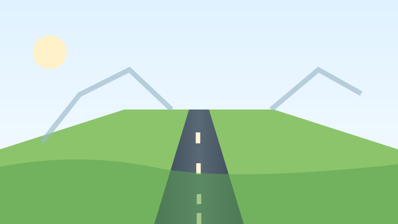
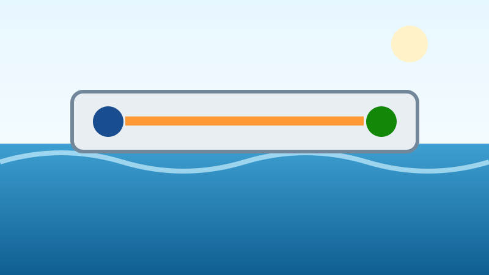
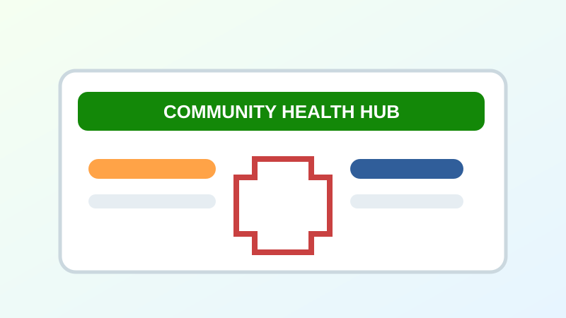

ON TRACK
Digital Road Upgrade
Infrastructure · 12 milestones · 46 tasks
Project ManagerYou
Progress82%
1 active risk · 38 evidence recordsOpen Project →
Projects where you are involved.
Your workspace starts with the project you are responsible for, monitoring or contributing to.

Infrastructure · 12 milestones · 46 tasks

Water · 15 milestones · 52 tasks

Health · 9 milestones · 31 tasks
Infrastructure · 11 milestones · 41 tasks
You can see project role, current progress, assigned work, evidence and project alerts before opening the full workspace.
Select a project → Observer loads that project's overview, milestones, tasks, evidence, analytics, alerts and reports.